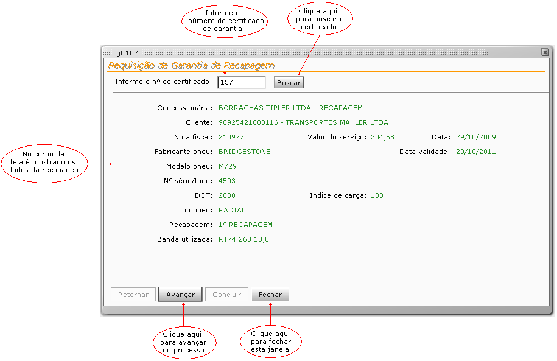
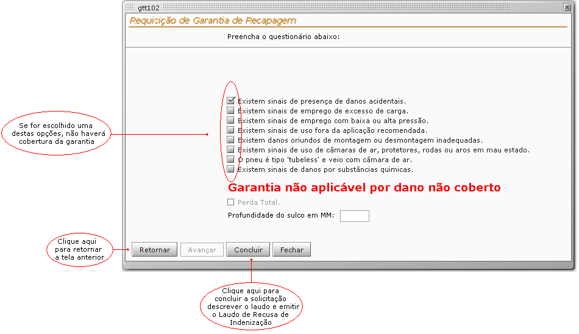
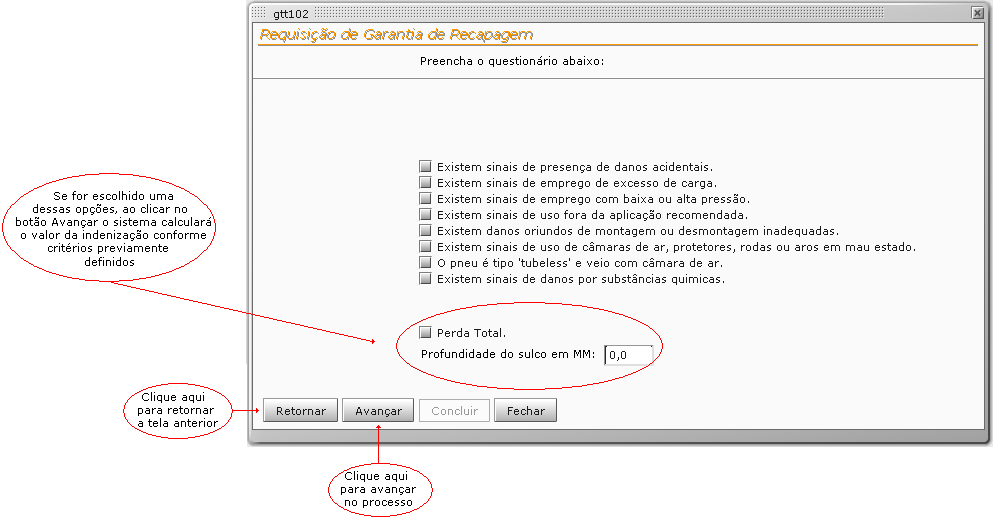
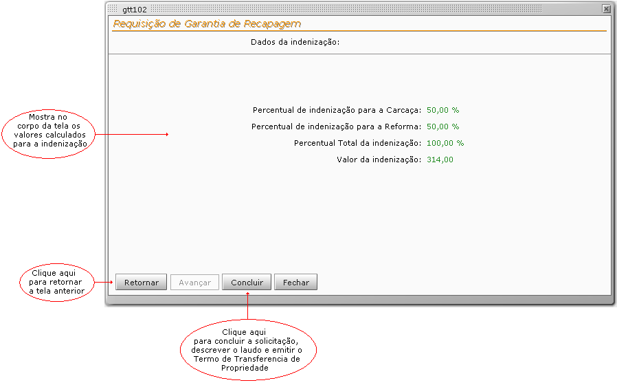
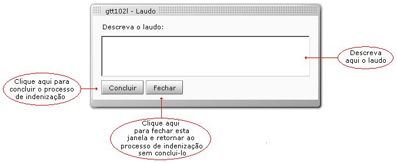

Tela : Requisição de Garantia de Recapagem.
 |
Esta tela poderá ser acessada através da opção Requisição Garantia do menu principal.
Indenização recusada por dano não coberto.
 |
Indenização por Perda Total ou por mm Restante.
 |
Cálculo da valor da indenização.
 |
Caixa de diálogo para Inserção do laudo.
 |